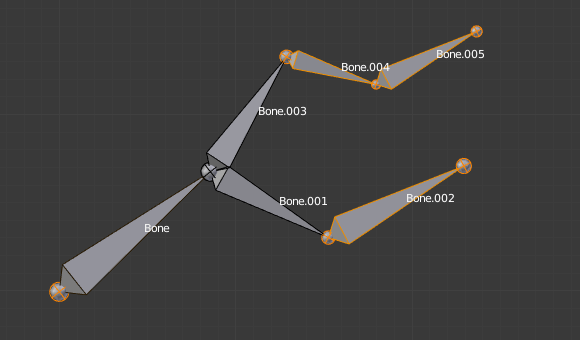

Редагування Кісток -- Editing Bones¶
Видавлення -- Extrude¶
Орієнтир -- Reference
| Mode: | Edit Mode |
|---|---|
| Menu: | |
| Hotkey: | E, Shift-E |
При натисканні вами E, з кожної виділеної верхівки (явно або неявно), створюється нова кістка. Ця кістка буде нащадком кістки, з «верхівки» якої вона видавлена, та буде з'єднана останньою. Як і звичайно, при здійсненні видавлення, верхівки ново видавлених кісток стають виділені та перемкнуті у режим захопу, а тому ви можете їх розміщати бажаним чином. Дивіться Ілюстрацію Приклад видавлення..

Арматура з трьома виділеними верхівками. |

Три видавлені кістки. |
You also can use the rotating/scaling extrusions, as with meshes, by pressing respectively E R and E S -- as well as locked extrusion along a global or local axis.

Виділена верхівка одиничної кістки. |

Дві дзеркально видавлені кістки. |
Bones have an extra "mirror extruding" tool, called by pressing Shift-E. By default, it behaves exactly like the standard extrusion. But once you have enabled the X-Axis Mirror editing option (see X-Axis Mirror), each extruded tip will produce two new bones, having the same name except for the "_L"/ "_R" suffix (for left/right, see the next page). The "_L" bone behaves like the single one produced by the default extrusion -- you can grab/rotate/scale it exactly the same way. The "_R" bone is its mirror counterpart (along the armature's local X axis), see Fig. Приклад дзеркального видавлення..
Quan trọng
Скасування цієї дії видавлення призвете до того, що новостворені кістки повернуться у позицію джерела (зі створенням кісток з нульовою довжиною). Вони будуть вилучені при виході з Режиму Правки -- Edit Mode, однак, вони можуть спричиняти плутанину, і навряд чи ви схочете їх зберігати. Якщо ви усвідомлюєте цю проблему, то негайно касуйте дію видавлення.
Якщо вам цікаво, ви не можете просто натиснути X для вирішення цієї проблеми, так само як ви це робите при редагуванні сітей, оскільки видавлення виділяє ці ново створені верхівки, а як пояснено нижче, засіб Видалення -- Delete ігнорує ці суглоби костей. Щоб позбутися цих видавлених костей без касування, ви повинні перемістити ці верхівки, а потім виділити ці кості та видалити (Delete Selected Bone(s)) їх.
Клацки Миші -- Mouse Clicks¶
Орієнтир -- Reference
| Mode: | Edit Mode |
|---|---|
| Hotkey: | Ctrl-LMB |
If at least one bone is selected, Ctrl-LMB-clicking adds a new bone.
Про верхівку цієї нової кістки:
After you Ctrl-LMB-clicked it becomes the active element in the armature, it appears to be right where you clicked, but (as in mesh editing) it will be on the plane parallel to the view and passing through the 3D cursor.
Позиція кореня та приріднення нової кістки залежить від активного елемента:

Ctrl-клацання, коли активним елементом є кістка -- bone.
If the active element is a bone:
- The new bone's root is placed on the active bone's tip.
- The new bone is parented and connected to the active bone (check the Outliner in Fig. Ctrl-клацок, коли активним елементом є верхівка -- tip.).

Ctrl-клацок, коли активним елементом є верхівка -- tip.
If the active element is a tip:
- The new bone's root is placed on the active tip.
- The new bone is parented and connected to the bone owning the active tip (check the Outliner in Fig. Ctrl-клацок, коли активним елементом є верхівка -- tip.).

Ctrl-клацок, коли активним елементом є нез'єднаний корінь -- disconnected root.
If the active element is a disconnected root:
- The new bone's root is placed on the active root.
- The new bone is not parented to the bone owning the active root (check the Outliner in Fig. Ctrl-клацок, коли активним елементом є нез'єднаний корінь -- disconnected root.).
І, звідси, така нова кістка не буде з'єднана з будь-якою іншою кісткою.

Ctrl-клацання, коли активним елементом є з'єднаний з чимось корінь -- connected root.
If the active element is a connected root:
- The new bone's root is placed on the active root.
- The new bone is parented and connected to the parent of the bone owning the active root (check the Outliner in Fig. Ctrl-клацання, коли активним елементом є з'єднаний з чимось корінь -- connected root.).
This should be obvious because if the active element is a connected root then the active element will be also the tip of the parent bone, so it is the same as the second case.
Як тільки верхівка нової кістки стає активним елементом, то ви можете повторити ці клацки Ctrl-RMB кілька разів для послідовного додання кількох костей у кінець того ж самого ланцюга.
Заповнити Між Суглобами -- Fill Between Joints¶
Орієнтир -- Reference
| Mode: | Edit Mode |
|---|---|
| Menu: | |
| Hotkey: | F |
Головне використання цього засобу -- це створення однієї кістки між двома виділеними суглобами натисненням F, подібно до того, як і при редагуванні сітей ви можете «створювати ребра/грані».
Якщо ви маєте виділеними один корінь та одну верхівку, то нова кістка:
- Буде мати корінь, поміщений на виділеній верхівці.
- Буде мати верхівку, поміщену на виділеному корені.
- Буде приріднена та з'єднана з кісткою, що володіє виділеною верхівкою.

Активна верхівка зліва. |

Активна верхівка справа. |
Якщо ви маєте виділеними дві верхівки, то нова кістка:
- Буде мати корінь, поміщений на тій з виділених верхівці, що найближча до 3D курсора.
- Буде мати верхівку, поміщену на іншій з виділених верхівці.
- Буде приріднена та з'єднана з кісткою, що володіє верхівкою, яка використовується як корінь нової кістки.

3D курсор зліва. |

3D курсор справа. |
If you have two roots selected, you will face a small problem due to the event system in Blender not updating the interface in real-time.
При натисненні F та з виділеними двома коренями, ви побачите нову кістку:
- З коренем, поміщеним на одному з виділених корені, що є найближчим до 3D курсора.
- З верхівкою, поміщеною на іншому з виділених корені.
- Прирідненою та з'єднаною з кісткою, що володіє коренем, що використовується як корінь нової кістки.
Якщо ви спробуєте рухати цю нову кістку, Blender оновить інтерфейс і ви побачите, що корінь цієї нової кістки переміщається до верхівки предківської кістки.

Перед оновленням інтерфейсу користувача (3D курсор зліва). |

Після оновлення інтерфейсу користувача, коректна візуалізація. |
Натиснення F з виділеним тільки одним суглобом кістки створить нову кістку з виділеного суглоба до позиції 3D курсора та не дасть приріднення до жодної з кісток арматури.

Заповнення з виділеною тільки однією верхівкою. |

Заповнення з виділеним тільки одним коренем. |
Ви отримаєте повідомлення про помилку, коли:
- Спробуєте заповнити між суглобами однієї й тієї ж кістки.
- Спробуєте заповнити між більше ніж двома суглобами кісток.
Дублювання -- Duplicate¶
Орієнтир -- Reference
| Mode: | Edit Mode |
|---|---|
| Menu: | |
| Hotkey: | Shift-D |
Ghi chú
Цей інструмент працює на виділених кістках; виділені її суглоби ігноруються.
As in mesh editing, by pressing Shift-D the selected bones will be duplicated. The duplicates become the selected elements and they are placed in grab mode, so you can move them wherever you like.
Якщо ви виділите частину ланцюга, то, дублюючи її, ви отримаєте копію виділеної частини, а скопійовані кістки взаємоз'єднаються точно так само, як і їх оригінали.
Дублікат кістки, яка приріднена до іншої кістки, також буде приріднений до тієї ж кістки, навіть, хоча коренева кістка не була виділена для дублювання. Майте на увазі, однак, що, якщо кістка приріднена та з'єднана з невиділеною кісткою, то її копія буде приріднена, але не з'єднана з цією невиділеною кісткою (дивіться Ілюстрацію Приклад дублювання.).

Арматура з трьома виділеними кістками та виділеним одиничним коренем. |

Три дубльовані кістки. Зауважте, що виділений ланцюг зберігається в копії, і що Bone.006 приріднена, але не з'єднана з Bone.001, що позначається чорною пунктирною лінією. Аналогічно, Bone.007 приріднена, але не з'єднана з Bone.003. |
{kind=link}
Розділення -- Split¶
Орієнтир -- Reference
| Mode: | Edit Mode |
|---|---|
| Menu: | |
| Hotkey: | Y |
Disconnects the selection and clears the parent at the start and end. ToDo add.
Видалити Виділені Кістку(ки) -- Delete Selected Bone(s)¶
Орієнтир -- Reference
| Mode: | Edit Mode |
|---|---|
| Menu: | |
| Hotkey: | X |
Цей засіб видаляє виділені кістки, виділені суглоби ігноруються.
Якщо ви видаляєте кістку у ланцюгу, то її нащадок(ки) будуть автоматично пере-приріднені до її предка, але не з'єднані, з метою запобігання деформуванню всієї арматури.

Арматура з двома виділеними кістками, перед самим видаленням. |

Дві кістки були видалені. Зауважте, що Bone.002, що попередньо була з'єднана з видаленою Bone.001, тепер приріднена, але з'єднана з Bone. |
Об'єднати Кістки -- Merge Bones¶
Орієнтир -- Reference
| Mode: | Edit Mode |
|---|---|
| Menu: | |
| Hotkey: | Alt-M |
Ви можете об'єднувати разом кілька виділених кісток, якщо вони формують ланцюг. Кожен під-ланцюг, формований виділеними кістками, буде давати одну кістку, корінь якої буде отриманий з кореня кореневої кістки та верхівка якої буде отримана з верхівки верхівкової кістки.
Підтвердження цієї операції здійснюється клацком на пункті спливного меню «Об'єднати Кістки > У Ланцюгах» -- .
Якщо інший (не-виділений) ланцюг починається всередині об'єднуваного ланцюга кісток, то він буде приріднений до результатної об'єднаної кістки. Якщо вони були з'єднані, то він буде з'єднаний з цією новою кісткою.
Тут є дивна тонкість (дивіться Ілюстрацію Приклад об'єднання.): навіть при з'єднанні (коренева кістка необ'єднаного ланцюга немає жодної сфери кореня) кістки не з'єднуються візуально. Це відбудеться, як тільки ви зредагуєте одну кістку, по-різному, залежно від того, в якому ланцюгу буде редагуватися кістка (порівняйте два нижні зображення на ілюстрації для кращого розуміння).

Арматура з виділеним ланцюгом та одинична виділена кістка перед самим об'єднанням. |

Кістки Bone, Bone.001 та Bone.002 були об'єднані у кістку Bone.006, тоді як Bone.005 не була модифікована. Зауважте, Bone.003, з'єднана з Bone.006, але «реально» ще не з'єднана. |

Bone.004 було обернуто, і таким чином верхівка Bone.006 була переміщена на корінь Bone.003. |

The tip of Bone.006 has been translated, and hence the root of Bone.003 was moved to the tip of Bone.006. |
Підподілення -- Subdivide¶
Орієнтир -- Reference
| Mode: | Edit Mode |
|---|---|
| Menu: | , |
Ви можете підподіляти кістки, щоб отримувати дві або більше кісток там, де була тільки одна кістка. Цей інструмент підподілятиме усі виділені кістки, зберігаючи наявні відношення: кістки, створені підподіленням, завжди формуватимуть ланцюг з'єднаних кісток.
Для створення довільної кількості кісток з кожної виділеної кістки скористайтеся нижче згаданою уставою на панелі Оператора «Підподіл Багато» -- Subdivide Multi.
- Кількість Поділів -- Number of Cuts
- Визначає кількість поділів. Як і при редагуванні сітей, якщо ви задасте n поділів, то отримаєте n + 1 кісток з кожної виділеної кістки.

Арматура з однією виділеною кісткою перед самим багато-підподілом. |

Виділена кістка була «поділена» два рази, давши три нові кістки. |
Блокування Кісток -- Locking Bones¶
Ви можете запобігати трансформуванню кісток у Режимі Правки -- Edit Mode кількома способами:
- Усі кістки можуть блокуватися, клацком на стягу «Блокування» -- Lock на панелі «Трансформації» -- Transform у вкладці «Кістка» -- Bone Редактора Властивостей;
- Вибором у спливному меню за Shift-W пункту «Перемкнути Опції Кісток > Блокування» --
- Select .
Якщо корінь заблокованої кістки з'єднаний з верхівкою розблокованої кістки, то вона не буде заблокована, тобто ви будете у змозі рухати її, як захочете. Це означає, що коли у ланцюгу з'єднаних кісток ви блокуєте одну кістку, то фактично ви блокуєте лише її верхівку. Для нез'єднаних кісток блокування ефективне лише тоді, коли воно зроблене для обох їх суглобів.
Дзеркалення за X-віссю -- X-Axis Mirror¶
Орієнтир -- Reference
| Mode: | Edit Mode |
|---|---|
| Panel: |
Ця опція вмикає автоматичне дзеркалення дій редагування вздовж осі X. Це ще один дуже корисний засіб -- X-Axis Mirror -- доступний на панелі «Полиця Інструментів > Опції Арматури» -- у Режимі Правки -- Edit Mode для Арматури. Коли ви маєте пану кісток з однаковим іменем, але з різними «суфіксами» (наприклад, ".R"/".L", or "_right"/"_left" ...), то при вмиканні цієї опції кожен раз при трансформуванні вами (пересув/оберт/масштаб...) однієї з кісток її дзеркальне відображення буде трансформуватися відповідно через симетрію вздовж локальної осі X арматури. Оскільки, більшість оснасток мають принаймні одну вісь симетрії (тварини, люди, ...), то це легкий спосіб позбавити вас половини роботи щодо редагування!
Xem thêm
Про іменування кісток дивіться тут -- naming bones.
Відокремити Кістки -- Separate Bones¶
Ви можете, як і при редагуванні сітей, відокремлювати виділені кістки у новий об'єкт арматури за допомогою команди «Арматура > Відокремлення» -- , Ctrl-Alt-P, а також, звичайно, вже у Режимі Об'єкта -- Object Mode ви можете сполучати виділені арматури в одну за допомогою «Об'єкт > Сполучення» -- , Ctrl-J.